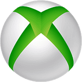
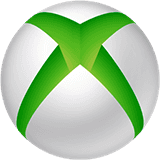

Call of Duty Modern Warfare 2
AKCIONA, Activision
Datum izlaska: 28.10.2022.
Evil West
AKCIONA, Focus Entertainment
Datum izlaska: 21.11.2022.

The Callisto Protocol
AVANTURA, Krafton
Datum izlaska: 02.12.2022.

Sonic Frontiers
AVANTURA, SEGA
Datum izlaska: 08.11.2022.

Hogwarts Legacy
AVANTURA, Warner Bros. Games
Datum izlaska: 10.02.2023.

Hello Neighbor 2
AVANTURA, Erie Guest Studios
Datum izlaska: 06.12.2022.

The Devil In Me
AVANTURA, Bandai Namco
Datum izlaska: 18.11.2022.
By Nikola Petkovic

Konačno, Far Cry 6 stiže na Steam!
Dugo očekivana vest stigla je za sve srpske gejmere koji su strpljivo čekali dolazak popularne igre Far Cry 6 na Steam platformu. Nakon mnogo spekulacija i nagađanja, Ubisoft je konačno potvrdio da će igra biti dostupna za preuzimanje putem Steam-a, donoseći uzbuđenje i radost fanovima serijala.
Far Cry 6, najnovije poglavlje u ovoj ikoničnoj akcionoj avanturi, smešteno je na prelepi Karipski otok Yara. Igrači će se naći u ulozi Dani Rojasa, mladog gerilskog borca koji se bori protiv diktatora Antonija Castra i njegove brutalne vlasti. Uz ogroman otvoreni svet, pun bogate faune i flore, igrači će imati priliku da istraže prelepe pejzaže, otkriju tajne tropskih džungli i suoče se sa raznovrsnim neprijateljima.
Dolazak Far Cry 6 na Steam predstavlja veliku pobedu za sve igrače koji preferiraju ovu popularnu platformu za digitalnu distribuciju igara. Steam je već dugo vremena jedan od najomiljenijih izbora za gejmere širom sveta, pružajući im jednostavan pristup i mogućnost povezivanja sa zajednicom igrača. Sada će se srpski igrači pridružiti globalnoj zajednici koja se već dugo divi ovoj franšizi.
Ubisoftova odluka da lansira Far Cry 6 na Steam-u pokazuje i njihovu posvećenost igračima i želju da pruže najbolje iskustvo moguće. Steam je poznat po svojoj stabilnosti, korisničkom interfejsu i brojnim funkcijama koje olakšavaju upravljanje i igranje igara. Sa preuzimanjem Far Cry 6 putem Steam-a, srpski igrači će imati mogućnost da uživaju u svim prednostima ove platforme, uključujući automatsko ažuriranje igara, dostupnost različitih jezičkih opcija i laku komunikaciju sa prijateljima.
Pored toga, dolazak Far Cry 6 na Steam otvara mogućnosti za proširenje multiplayer iskustva. Igrači će imati priliku da se pridruže prijateljima u kooperativnom igranju ili da se takmiče u intenzivnim online mečevima. Steam zajednica je već poznata po svojoj veličini i aktivnosti, što će omogućiti srpskim igračima da se povežu sa drugim entuzijastima iz celog sveta.
Far Cry 6 je jedno od najiščekivanijih izdanja ove godine i njegov dolazak na Steam samo pojačava uzbuđenje. Fanovi serijala će konačno moći da istražuju sunčani Karipski otok, koristeći sve prednosti koje Steam platforma pruža. Bez sumnje, ovo je dobra vest za sve srpske gejmere i pravi podstrek za nove avanture u svetu Far Cry-a.
Pripremite se, srpski gejmeri, Far Cry 6 je spreman za vašu avanturu na Steam-u!